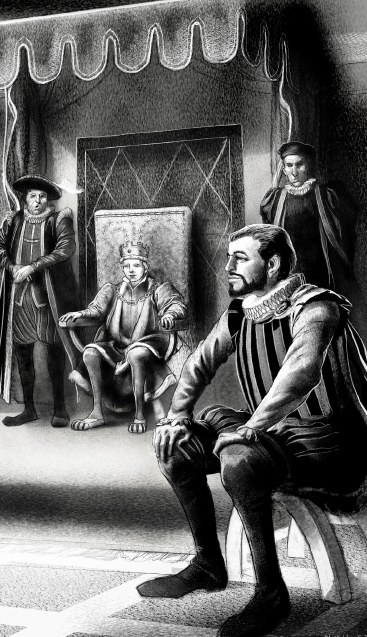

Listen to Part 1:
Hạnh phúc mãi mãi về sau
Khi lễ đăng quang diễn ra, Miles đang tìm Edward. Chàng vô cùng lo lắng cho người bạn trẻ của mình. Chàng cũng lo lắng cho Quý cô Edith và Lâu đài Hendon. Miles đến cung điện và chờ đợi bên ngoài. Chàng hy vọng được gặp đức vua và nhờ ông giúp đỡ. Chàng đợi lâu đến mức thiếp đi.
Sáng hôm sau, một người hầu bước ra khỏi cung điện. Anh ta thấy một người đàn ông ngủ bên cổng cung điện. Thường thì có nhiều người ngủ ở đó nhưng người đàn ông này thì khác. Sau lễ đăng quang, đức vua mới đã bảo tất cả người hầu đi tìm một người đàn ông cao lớn mặc quần áo lính già. Tên anh ta là Miles Hendon và là bạn tốt của đức vua mới. Người hầu nhìn người đàn ông đang ngủ. Anh ta cao lớn và mặc quần áo lính già. Người hầu đánh thức người đàn ông dậy.
‘Ngươi có tên là Miles Hendon không?’ anh ta hỏi.
‘Phải, đúng vậy,’ Miles trả lời. ‘Sao thế?’
‘Hãy đi theo ta, thưa ngài,’ người hầu nói. ‘Chúng ta sẽ đến gặp đức vua!’
Người hầu đưa Miles vào cung điện. Miles rất ngạc nhiên. Chàng nghĩ rằng sẽ rất khó để gặp được đức vua nhưng hóa ra lại dễ dàng! Họ bước vào một căn phòng lớn có rất nhiều người. Miles đứng giữa phòng và chờ được nói chuyện với đức vua. Đức vua mới đang ngồi trên ngai vàng và đang nói chuyện với một người hầu. Miles nhìn xung quanh căn phòng tuyệt đẹp. Chàng cảm thấy mình thật may mắn. Đức vua mới mặc quần áo đắt tiền, sang trọng. Xung quanh ông là rất nhiều người hầu. Rồi Miles nhìn thấy khuôn mặt của đức vua.
‘Con trai ta!’ Miles thầm thì. ‘Có thực sự là nó không?’
Miles không thể tin vào mắt mình. Đức vua trông giống hệt Tom Canty thời còn trẻ! Chàng nảy ra một ý. Chàng thấy một chiếc ghế trước ngai vàng. Chàng bước đến và ngồi xuống.
Listen to Part 2:
‘Ngươi đang làm gì vậy?’ một người hầu hét lên. ‘Ngươi không được phép ngồi trước mặt đức vua!’
Đức vua nghe thấy thế và nhìn Miles.
‘Ồ, được chứ,’ đức vua mỉm cười nói. ‘Người này là Miles Hendon. Anh ta là bạn tốt của ta. Anh ta được phép ngồi trước mặt đức vua, và tất cả con cái của anh ta cũng thế, mãi mãi!’
Miles không nói nên lời. Chàng vừa cười vừa khóc. Người bạn trẻ của chàng không hề bị điên. Nó thực sự là đức vua!
‘Ta đã cử lính canh đến Lâu đài Hendon,’ đức vua nói. ‘Hugh đã nói rằng hắn viết lá thư. Đừng lo lắng. Hắn sẽ bị tống vào tù! Ngươi có thể sống ở Lâu đài Hendon và có thể cưới Quý cô Edith!’
Miles mừng đến phát khóc. Chàng muốn hôn cậu bé. Rồi chàng nhớ ra rằng người bạn trẻ của mình là đức vua và chàng quỳ xuống.
‘Cảm ơn ngài vì tất cả mọi thứ, thưa đức vua của tôi,’ Miles nói. ‘Tôi sẽ trở về Lâu đài Hendon và cưới Quý cô Edith, nhưng xin đừng tống Hugh vào tù.’
‘Được, hắn sẽ không bị tống vào tù. Ngươi là một người rất tốt bụng và là một người bạn thật sự, Thưa Ngài Miles. Ta hy vọng ngươi sẽ rất hạnh phúc,’ đức vua nói.
Rồi Tom Canty bước vào phòng. Nó không mặc quần áo rách rưới nhưng quần áo thì khá bình thường. Miles không thể tin vào mắt mình. Cậu bé trông giống hệt đức vua. Câu chuyện hoàn toàn là sự thật!

Listen to Part 3:
‘Ồ, được chứ,’ đức vua mỉm cười nói. ‘Người này là Miles Hendon. Anh ta là bạn tốt của ta. Anh ta được phép ngồi trước mặt đức vua!’
‘Tom Canty!’ Vua Edward nói. ‘Ta đã nghe kể về cuộc sống của ngươi trong cung điện. Ta hài lòng về ngươi. Ngươi đã là một vị vua tốt. Ta muốn ngươi sống tại Bệnh viện Christ và giúp đỡ lũ trẻ ở đó. Hãy khiến chúng trở nên thông minh và tốt bụng, giống như ngươi. Ta sẽ cho ngươi và gia đình ngươi rất nhiều tiền. Các ngươi sẽ không bao giờ nghèo đói hay thiếu thốn nữa!’
Miles Hendon trở về Lâu đài Hendon và cưới Quý cô Edith. Tom, mẹ và các chị của nó đến sống ở Bệnh viện Christ. Họ không bao giờ gặp lại John Canty hay Bà ngoại Canty nữa. Tom giúp đỡ lũ trẻ ở bệnh viện và sống một cuộc đời dài và hạnh phúc. Mọi người luôn nhắc đến cuộc sống ở cung điện của nó.
Edward thường gặp Tom Canty và Miles Hendon, và họ luôn kể lại câu chuyện của mình. Tuy nhiên, thật đáng buồn khi Vua Edward qua đời khi mới mười lăm tuổi. Trước khi mất, ông đã là một vị vua vĩ đại. Ông rất tốt với người dân của mình. Ông lắng nghe họ và giúp đỡ họ. Điều này là vì ông đã học được rất nhiều điều khi còn là một người ăn xin.